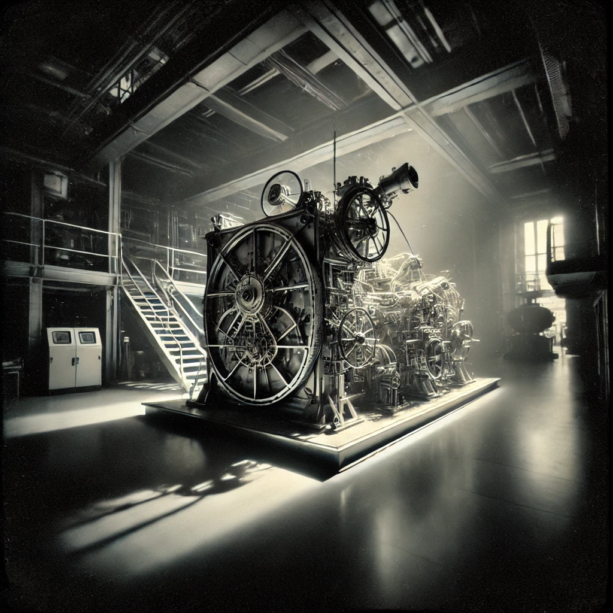

The Secret Time Machine Report
Classified Documentation from the 1800s
Historical Illustration

Key Components of the Time Machine
The Temporal Gear Mechanism
Chronal Energy Conduit
Time Dial Calibration
Technical Specifications
Component
Description
Temporal Gear
A rotating gear used to navigate the time vortex.
Energy Conduit
Channels chronal energy to power the time shift.
Time Dial
Used to calibrate the exact temporal destination.